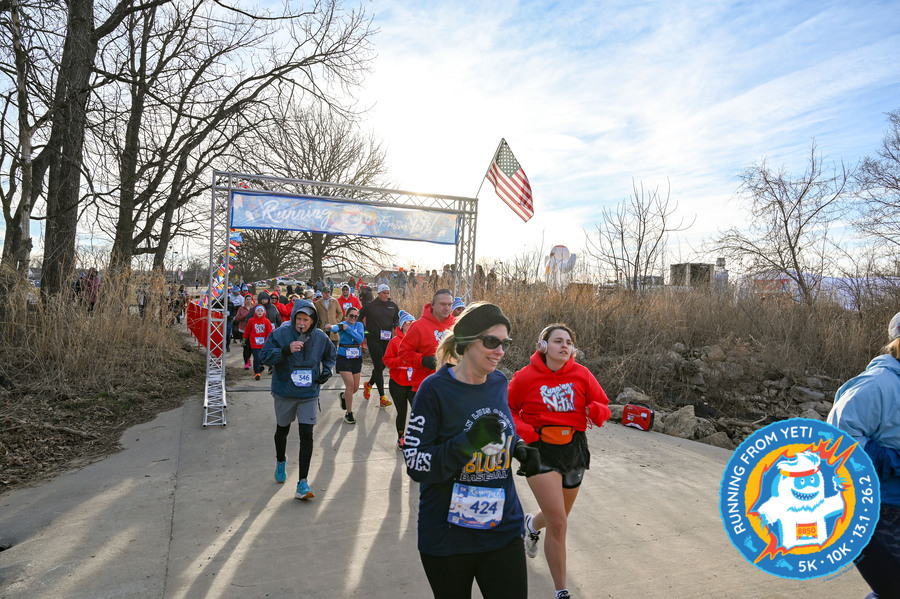
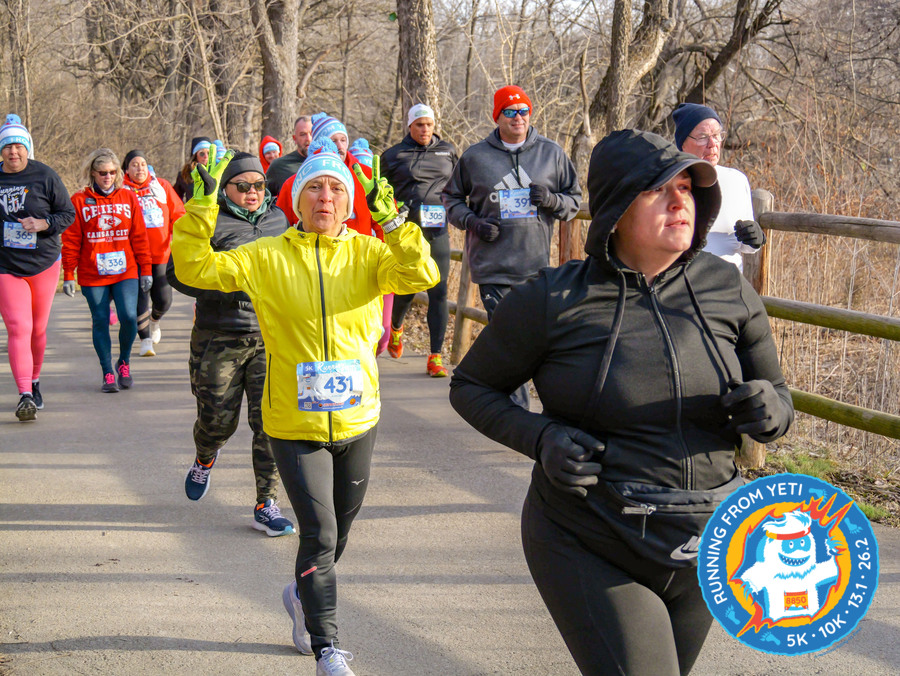
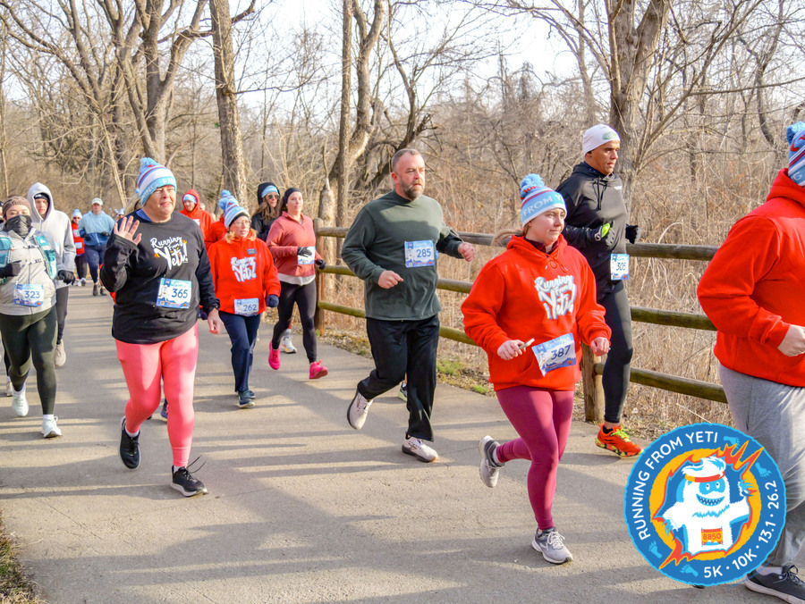
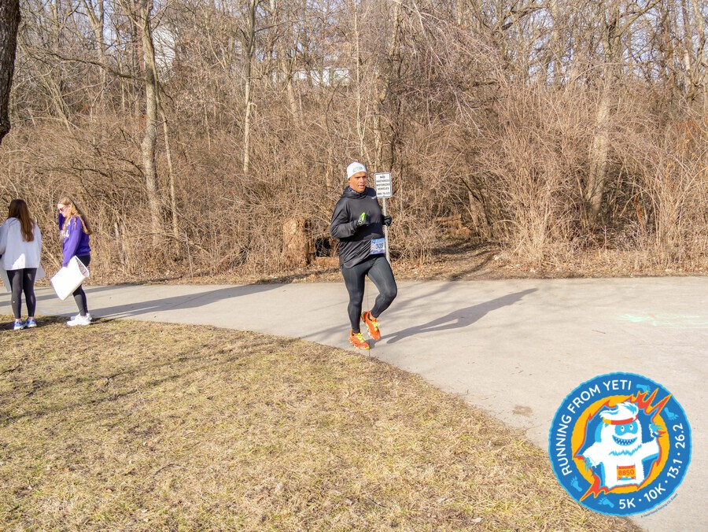
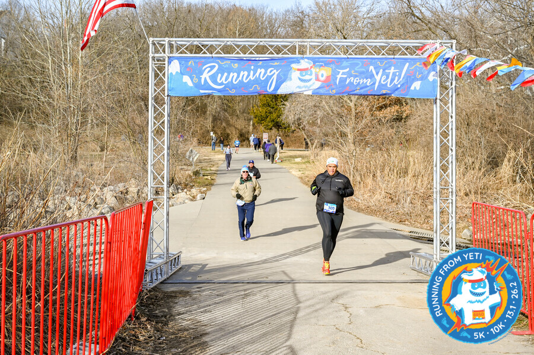
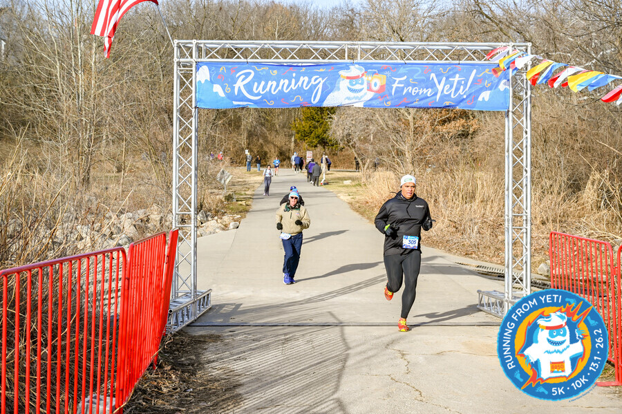

I signed up for a half-marathon back in January, a key part of my training plan for Ironman Florida in November. Little did I know, the basketball playoffs would throw a wrench into my meticulously crafted schedule. Race day arrived, and the 10am game loomed large. To make it, I needed to switch from the half-marathon to the 5K.
Arriving an hour early, I discovered the 5K was completely sold out. Panic set in. However, they offered a single spot in the 10K. My logic? I could always turn the 10K into a 5K if needed. The catch? Different start times. They told me to return at 7:50 am to see if a 5K spot opened up.
Back to my truck I went, map in hand, desperately trying to devise a backup plan. I even attempted to bribe a 5K runner into “upgrading” to the 10K. No luck. Returning to the event booth at 7:50 am, I was met with another curveball: “Come back two minutes before the race.” That would be 8-minutes after the 10K had already begun.
Undeterred, I went back again, right after the 10k start, but before the 5k start. After some pleading, they finally relented and let me switch to the 5K. Starting at the back of the pack, I made the rookie mistake of going out way too fast. My goal was a comfortable 36:00, with a secret hope for 34:00, given my less-than-stellar recent training.

I was trying to be patient. I wasn’t weaving excessively, and waited for good opportunities to pass. I was also completely ignoring my watch.

The course was fantastic: mostly flat, paved trails wide enough for bikes and golf carts.

After the turnaround, I had a moment to breathe. I followed a few runners, but the early surge caught up to me. Dizziness set in, and I resorted to a run-walk strategy. My only motivation was to make it to the basketball game on time.

Convinced that slowing down meant a strong finish, I was wrong. I did manage to catch and pass the two runners behind me right at the finish line. I stopped my watch, grabbed my medal, and then it hit me. I knew what was coming. I staggered away from the finish line, made it about 20 yards, and then the inevitable happened: a very loud and painful episode of vomiting. It hurt. It was not pretty.


Feeling utterly wretched, I grabbed a banana and some water and headed back to my truck. I made it home just in time for a quick shower before heading to the basketball game. I felt awful the rest of the day, during the game, and even at Refuel afterΩward. Thankfully, I felt much better the day after.
Links: